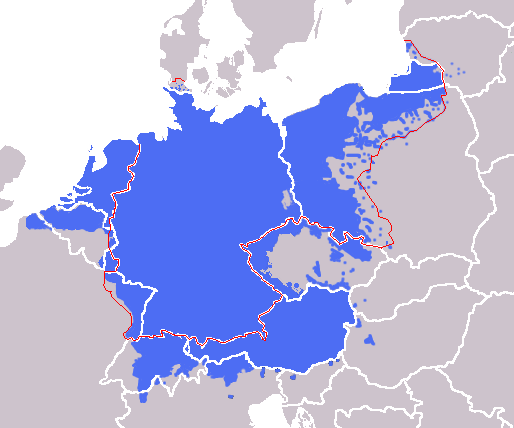
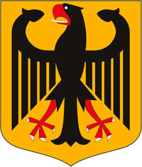
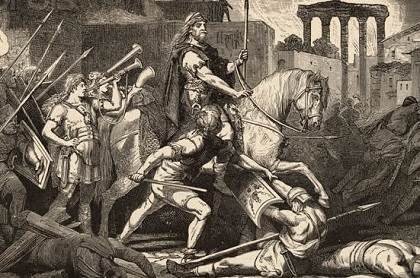
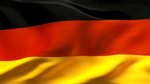

german language
German is a West Germanic language that is mainly spoken in Central
Europe. It is the most widely spoken and (co-) official language in
Germany, Austria, Switzerland, South Tyrol (Italy), the German-speaking
Community of Belgium, and Liechtenstein. It is also one of the three
official languages of Luxembourg. The languages which are most similar
to German are the other members of the West Germanic language branch:
Afrikaans, Dutch, English, the Frisian languages, Low German/Low Saxon,
Luxembourgish, and Yiddish. German is the second most widely spoken
Germanic language, after English.
The History of German language

The history of the German language as separate from common West Germanic
begins in the Early Middle Ages with the High German consonant shift.
Old High German, Middle High German and Early New High German span the
duration of the Holy Roman Empire. The 19th and 20th centuries saw the
rise of Standard German and a decrease of dialectal variety. The 20th
century brought around the German catastrophe. After World War I the use
of German was suppressed and discouraged due to the anti-German
sentiment, but nevertheless it did not inflict any lasting damage to its
Sprachraum nor its lingua franca status in some areas . However, after
World War II, territorial changes implemented by the Allies practically
removed the German language from large parts of Central and Eastern
Europe that were inhabited by German-speaking populations beginning in
the 12th century. It contributed to moribundness and extinction of some
local dialects like Silesian German, High Prussian or East Pomeranian
dialects. Furthermore, it also damaged the language's status in
Central-Western and Central-Southern Europe, where anti-German sentiment
became even greater than before the war.
Coat of arms of Germany

The coat of arms of Germany displays a black eagle with a red beak,
tongue and feet on a golden field, which is blazoned: Or, an eagle
displayed sable beaked langued and membered gules. This is the
Bundesadler (German for "Federal Eagle"), formerly known as the
Reichsadler (German for "Imperial Eagle"). It is a re-introduction of
the coat of arms of the Weimar Republic (in use 1919–1935), which was
adopted by the Federal Republic of Germany in 1950.[1] The current
official design is due to Karl-Tobias Schwab (1887–1967) and was
originally introduced in 1928. The German Empire of 1871–1918 had
re-introduced the medieval coat of arms of the Holy Roman Emperors, in
use during the 13th and 14th centuries (a black single-headed eagle on a
golden background), before the emperors adopted the double-headed eagle,
beginning with Sigismund of Luxemburg in 1433. The single-headed
Prussian Eagle (on a white background; blazoned: Argent, an eagle
displayed sable) was used as an escutcheon to represent the Prussian
kings as dynasts of the German Empire. The Weimar Republic introduced a
version in which the escutcheon and other monarchical symbols were
removed.
The History of Germany

The history of Germany is not the history of a nation, but of a race...
Thus, even before the fall of the Roman Empire, it becomes the main
trunk out of which branch histories of nearly all European nations,
and... the connecting link between ancient and modern history. The
records of no other race throw so much light upon the development of all
civilized lands during a period of fifteen hundred years." So said
Bayard Taylor in his book, History of Germany (p.3). Certainly, German
contributions to civilization as we know it, have been massive. Great
German philosophers, musicians, poets, inventors, historians - far too
many to mention - have literally shaped this world's way of thinking
over the centuries. Could the German Reich, the oldest political
institution in Europe, which ruled the continent as the Holy Roman
Empire for a thousand years, and which almost gained control of the
WHOLE WORLD in two wars this century - could a people with a role in
human affairs that large, be completely ignored in the Bible? That's
what scholars would have you believe. The Bible does not mention the
word "Germany" - and for good reason - they did not acquire that name
until the Romans collectively labeled them Germani almost 2000 years
ago. In fact, the Germans refer to themselves as Deutsch, not German.
They call their beloved country Deutschland. If we are to find the
German people mentioned in the Bible, it must be under some other name
than what the Romans labeled them. For several years now, as regular
readers of the Trumpet know, we have taught that modern-day Germany
descended from the people the Bible refers to as the Assyrians. In this
article, we will prove this fact from the Bible and other historical
sources. Certainly, the Bible is the greatest historical source of all!
In fact, IT IS THE ONLY COMPLETE HISTORICAL SOURCE WE HAVE concerning
man's civilization. We have often said that one third of the Bible is
prophecy, most of which is for our day. And you can be sure that Assyria
is mentioned in numerous Bible prophecies. But much of the Bible is also
history. It is in the Bible where we read of the beginning and
establishment of the nation of Assyria - modern Germany. Together, Bible
history and prophecy can give us the complete story of the German people
from beginning to end. Let us now take a look at the early history of
the German people.
Flag of Germany

Germany has two competing traditions of national colours, black-red-gold
and black-white-red, which have played an important role in the modern
history of Germany. The black-red-gold tricolour's first appearance
anywhere in a German-ethnicity sovereign state within what today
comprises Germany occurred in 1778, and achieved prominence during the
1848 Revolutions. The short-lived Frankfurt Parliament of 1848–1850
proposed the tricolour as a flag for a united and democratic German
state under a constitutional monarchy. With the formation of the
short-lived Weimar Republic after World War I, the tricolour was adopted
as the national flag of Germany. Sixteen years later following World War
II, the tricolour was again designated as the flag of both West and East
Germany divided states in 1949. The two flags were identical until 1959,
when the East German flag was augmented with the coat of arms of East
Germany. Since reunification on 3 October 1990, the black-red-gold
tricolour has become the flag of a reunified Federal Republic of
Germany. After the Austro-Prussian War in 1866, the Prussian-dominated
North German Confederation adopted a tricolour of black-white-red as its
flag. This flag later became the flag of the German Empire, formed
following the unification of Germany under the Prussian king who became
emperor in 1871, and was used until 1918 with the end of the First World
War. Black, white, and red were reintroduced as the German national
colours with the establishment of Nazi Germany under Adolf Hitler in
1933, replacing German republican colours with imperial colours until
the end of World War II. The colours of the modern flag are associated
with the republican democracy first proposed in 1848, formed after World
War I, and represent German unity and freedom.[3] During the Weimar
Republic, the black-red-gold colours were the colours of the democratic,
centrist, and republican political parties, as seen in the name of
Reichsbanner Schwarz-Rot-Gold, formed by members of the Social
Democratic, the Centre, and the Democratic parties to defend the
republic against extremists on the right and left.
{kind=link}